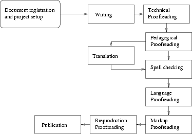

El concepto de editorial libre: servicios editoriales para la documentación libre.

Por Ismael Olea <ismael@olea.org>
Una conferencia CACLE


Objetivos
- Explicar el concepto de la documentación libre.
- Explicar la ventaja de la aplicación del modelo editorial clásico.
- Ofrecer una solución práctica y viable para la documentación libre.
Antecedentes del proyecto: la experiencia LuCAS/TLDP-ES
- La necesidad de documentación:
Producto Acabado = Programa Software + Manual de Usuario
-
La libertad en la documentación
- Libertad para usar.
- Libertad para copiar.
- Libertad para modificar.
- Libertad para distribuir las modificaciones.
- Fundado en 1995
-
Estado del proyecto
- Primera referencia de documentación en español.
- 616312 kb.
- 17350 ficheros.
- 35 réplicas registradas.
- Sistema de reparto de cargas entre algunas de las réplicas.
- 13 países.
- Centenas de colaboradores de toda la Hispanidad.
- Miembro de TLDP (The Libre Documentation Project).
-
Defectos detectados
- Paralización.
- Mala clasificación documental.
- Mantenimiento complicado.
- Baja calidad de la documentación.
- Desde 2000, trabajos de investigación en problemas y soluciones.
Conclusiones de la investigación en tecnologías de la documentación: requisitos de la editorial libre
- Los problemas de la documentación libre
- La necesidad de aplicar el concepto de autoedición
- La necesidad de aplicar los métodos editoriales clásicos.
- La necesidad de nuevas herramientas lingüísticas y documentales.
- La necesidad de organizar la producción y publicación como un gran proyecto abierto de soft libre.
- La conveniencia de usar herramientas de desarrollo cooperativo de software (CSD).
- La convenienza de operar en régimen de «outsourcing» editorial: servicios editoriales para el software libre.
- La obligación de facilitar la curva de aprendizaje de los autores.
- Lo conveniente de divulgar el proyecto y atraer a la industria, a la Academia y a los desarrolladores independientes y a los usuarios y lectores.
- Libro blanco de las tecnologías de documentación de LuCAS
Recopilación de la mayoría de nuestros trabajos de investigación.
- Implementación dentro del marco de la «web semántica».
El ciclo editorial
Roles, procesos y relaciones en el ciclo editorial clásico.

El concepto de autoedición
-
Definiciones
- autoedición.
- 1. f. Inform. Acción y efecto de autoeditar.
- autoeditar.
- 1. tr. Inform. Diseñar, componer e imprimir textos y gráficos mediante computador, con resultado similar al de la edición tradicional, para uso privado o público.
- Suele entenderse además por «autoedición» un proceso en el que el autor tiene casi todo el control del ciclo de edición.
-
Es un mito, falso, en gran cantidad de casos:
La solución final debe llevar la autoedición a su máxima expresión
La web semántica
- Promovida por el W3C
-
Adaptación de la web a las máquinas: infraestructura para la informática documental
- Separación y estructuración de los contenidos (XML)
- Separación e independencia de la representación en hojas de estilos (XSL)
- Separación de contenidos de las aplicaciones: «web services» (XML-RPC, SOAP)
- Relación y localización de la información mediante metadatos (RDF)
- http://www.w3.org/2001/sw/
La infraestructura tecnológica de la web semántica permitirá las aplicaciones documentales del futuro en una Internet formalmente estructurada
Servicios editoriales básicos
- Biblioteca.
- Alojamiento y organización de proyectos de documentación a la SourceForge (directorio de proyectos).
- Terminología (consultas y glosario de referencia).
- Mantenimiento de traducciones/Memorias de traducción.
- Calidad de la documentación (contenidos, estructuración de la información y formatos de reproducción).
- I+D de nuevos recursos lingüísticos.
- Tutoría y asistencia a los voluntarios en las nuevas herramientas y métodos.
La editorial libre debe dar soluciones técnicas y de consultoría a los usuarios para que tenga lugar el proceso de autoedición.
Biblioteca.
- Publicación y clasificación de la documentación.
- Búsqueda y recuperación de textos.
Alojamiento y organización de proyectos de documentación
- autoorganizada basada en un CSD (Forja)
Terminología
- consultas.
- glosarios de referencia.
Mantenimiento de traducciones/Memorias de traducción.
- Directorio de herramientas compatibles con gettext.
- Mantenimiento asistido de traducciones de aplicaciones.
- Mantenimiento de memorias de traducción generales y por proyectos.
Calidad de la documentación (contenidos, estructuración de la información y formatos de reproducción).
Implementación de un programa de calidad basado en el flujo de información:

I+D de nuevos recursos lingüísticos.
- Trabajo colaborativo (CSD: plataforma tipo SourceForge)
- Terminología
- Ortotipografía
- Correctores y asistentes
- Reproducción
- Publicación
- Integración de documentación en el sistema operativo
- Editor estructurado XML
- Libro, bibliografía o indicaciones de estilo
- Memorias de traducción
- Filtros para importar a Docbook
- Herramientas para facilitar el trabajo en proyectos libres
- Documentación de los todos los recursos.
- Directorio de recursos lingüísticos (un «gremio» SF)
- Plan editorial del proyecto enciclopédico del software libre
Tutoría y asistencia a los voluntarios en las nuevas herramientas y métodos.
Tutela de los activistas o «el cariño documental»
- Inspirado en el esfuerzo «Gnome Love».
- Documentación para formar a los nuevos activistas en técnicas y herramientas.
- Foro de ayuda al novato.
- Cuerpo de tutores formado por nuestros mejores hackers en tecnologías de documentación.
Detalle del plan pendiente de llevar a cabo.
Acciones para el cambio hacia los servicios editoriales
- Adaptación de las herramientas de trabajo en grupo
-
Trabajar respetando los roles del ciclo editorial
- editores literarios
- autores/traductores
- revisores
- impresores/editores de mesa
- bibliotecarios
- desarrolladores
- diseñadores e ilustradores
- programadores de software/herramientas
-
Crear un control de calidad
- listas de comprobación;
- Procedimientos de revisión;
- herramientas de ayuda.
-
Crear el plan editorial del software libre:
- necesidades de documentación del software;
- orientación enciclopédica;
- compatible con el desarrollo y organización de los proyectos de software libre;
- de aplicación a cualquier lengua;
- aplicación a largo plazo.
Esfuerzo de divulgación del proyecto
-
Participación en congresos:
- de software libre;
- de lingüística computacional.
- Divulgación en prensa escrita y electrónica.
-
Relación con organizaciones e instituciones afines:
- academias de la lengua;
- institutos para el desarrollo del idioma, etc.
-
Relación y divulgación con la Academia, a través de los departamentos de facultades de
- biblioteconomía,
- traducción,
- filología,
- informática.
Ejemplos de funcionamiento como una editorial libre
Resumen: operación como un outsourcing de servicios editoriales
- Alojar/registrar documentos de sub-proyectos de documentación.
- Cada documento -> 1 proyecto SF.
- Creación de los «gremios» relacionando los diferentes proyectos asociados.
- Alojamiento/registro de proyectos de documentación independientes.
- Ampliación de los servicios basados en recursos lingüísticos.
- Interconexión de plataformas documentales SF en redes de proyectos/documentos.
- Operación como biblioteca distribuida, con vistas «gremiales».
- Reclutamiento general de voluntariado.
- Puesta a disposición de cada proyecto de documentación de los hackers formados en el programa de tutorías.
- Etc.
Bibliografía
¿Preguntas?
(No dejen de hacer alguna para que el conferenciante no se sienta mal)